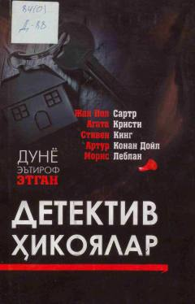

DEDunyoga mashhur mualliflarning eng sara detektiv hikoyalar to'plami.
Ushbu тўпламга дунёга машҳур ёзуvchilar — Artur Konan Doyl, Stiven King, Moris Leblan, Jan Pol Sartr va Agata Kristi qalamiga mansub qiziqarli detektiv hikoyalar kiritilgan. Kitob o'quvchilarga sir-sinoatga boy, o'tkir сюжетли va mantiqiy topishmoqlarga to'la asarlarni taqdim etadi. Mualliflarning o'ziga xos uslubi kitobxonni ilk sahifalardanoq o'ziga rom etadi.